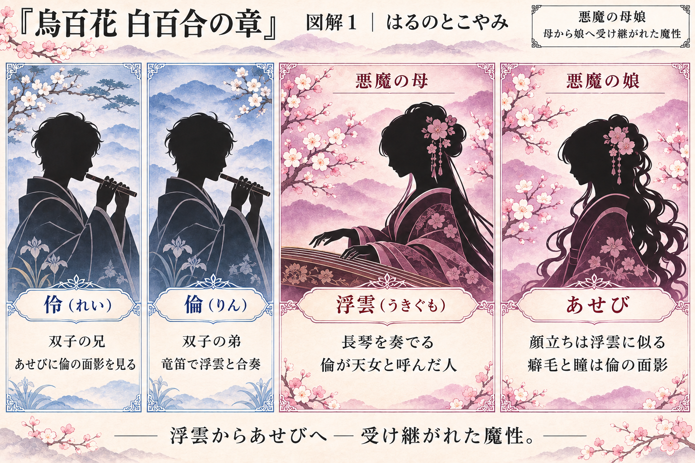

烏百花 白百合の章（外伝）
※⑤以降は、各話の結末や「八咫烏シリーズ」本編のネタバレを含みます。
① ストーリー
『烏百花 白百合の章』は、阿部智里さんの「八咫烏シリーズ」の外伝集第2弾。『蛍の章』に続く短編集で、山内を舞台にした八つの話が収められている。
雪哉の親友だった茂丸の家族や、雪哉が中央に上がる前に出会った市柳、妹の結を大切にする千早。さらに、西本家の側室となった環や、鬼火灯籠を作る職人の登喜司にも、それぞれの話がある。宗家や四家の動きを中心に描く本編を読んでいると、こうした人たちが普段どんなふうに暮らし、何を考えていたのかまでは分からない。そこを一話ずつ読めるのが、この短編集の面白いところである。
後半では、大紫の御前がまだ夕蟬と呼ばれていた頃、あせびの母・浮雲の過去、奈月彦と浜木綿の娘・紫苑の宮の幼い頃が描かれる。『烏に単は似合わない』『空棺の烏』『弥栄の烏』など、本編を読んだときに気になっていた人物や出来事を、もう一度振り返りたくなる一冊だった。
② あらすじ
阿部智里さんの「八咫烏シリーズ」外伝集第2弾。茂丸の妹から見た雪哉、北領にいた頃の市柳、妹の結を大切にする千早。さらに、西本家の側室たちの暮らしや、鬼火灯籠を作る職人、若き日の大紫の御前も描かれる。本編で見慣れた人物や道具にも、別の人の目を通すと、これまで知らなかった一面が見えてくる短編集である。
※以下は第1話から第6話までのネタバレを含みます。
④ 章ごとのストーリー
1．かれのおとない
みよしが雪哉と初めて会ったのは、兄の茂丸が勁草院にいた頃だった。休みで実家に戻ってきた茂丸が、勁草院で親しくなった雪哉を連れてきたのだ。雪哉は垂氷郷の郷長家の息子だが、村の子どもたちにも気さくに接し、川遊びにも付き合ってくれる。年下のみよしにも丁寧に接する雪哉に、みよしは次第に惹かれていった。
やがて山内を大地震が襲い、山内衆となった茂丸は、若宮の護衛中に命を落とす。以前は茂丸と一緒に来た家に、今度は雪哉が一人でやってくる。その姿を見て、みよしは、雪哉が以前とはどこか違うと感じる。茂丸が初めて雪哉を連れてきた頃を覚えているみよしだからこそ、その変化に気づいたのだと思う。
『弥栄の烏』で描かれた茂丸の死を、茂丸の帰りを待っていた家族の側から見ることができる話である。
2．ふゆのことら
『烏は主を選ばない』で雪哉が中央へ上がる直前、北領で開かれた武術大会での話である。市柳は風巻郷の郷長の三男で、雪哉より一つ年上。雪哉の兄・雪馬とは同窓で、のちに『空棺の烏』の勁草院で雪哉と再会する。
少年時代の市柳は、自分で「風巻の虎」と名乗るほど腕っぷしに自信があった。ただ、この先何をするかはまだ決めかねていた。そんなとき、垂氷郷でぼんくらと言われている雪哉が、若宮の側仕えに決まったと聞く。
市柳は、兄の雪馬がいるのに、いずれ雪哉が垂氷郷の郷長になるのではないかと口にする。それが雪哉の耳に入り、逆鱗に触れてしまう。武術大会で雪哉から剣の手ほどきを頼まれた市柳は、怯えているように見える雪哉に、自信満々で打ち込んでいく。ところが、手合わせを続けるうちに、雪哉が評判どおりの少年ではないことに気づき始める。
雪哉はこの頃から、相手が自分をどう見ているかをよく分かっていて、その思い込みまで利用する。市柳の鼻っ柱を折るやり方を見ていると、策士ぶりも、なかなか意地の悪いところ・根性の悪さも、もうこの頃から出ている。
阿部智里さんは、少年時代の雪哉を通して、その本性の一端を描いていたのだと思う。
市柳にとっては、この一件が勁草院へ進むきっかけになる。『空棺の烏』で、市柳が雪哉に妙に怯えていたのはなぜか。この話を読んで、ようやく腑に落ちた。
3．ちはやのだんまり
雪哉と勁草院で同窓だった千早には、血はつながっていなくても、何より大切にしている妹の結がいる。その結が、結婚を考えている相手として連れてきたのが、谷間に住むシンだった。身なりは粗末で、受け答えもぶっきらぼう。谷間に住んでいると聞くと、そこでどんな暮らしをしている男なのかも気になる。ところが、肝心の千早は口をきかない。題名のとおり、だんまりを決め込んでいる。
そこで間に入るのが、千早の親友で、結のことも妹のように気にかけてきた西家の明留である。千早が何も言わないので、明留は自分からシンに話を聞き、二人の仲を取り持とうとする。けれど、少し話したくらいで打ち解けられる相手でもなく、明留はすっかり振り回される。
真赭の薄も登場する。明留はシンと関わっていくうちに、最初に会ったときには分からなかった一面にも気づく。最後には二人の仲が認められるのだが、ずっと黙っていた千早がそこで口にする一言が、いかにも千早らしくておかしかった。
結を心配しているのは、千早も明留も同じである。それでも、黙り込む千早と、放っておけずにあれこれ動く明留とでは、気持ちの表し方がずいぶん違う。結の結婚話を通して、千早と明留が普段どんな付き合いをしているのかまで見えてくるところが面白かった。
4．あきのあやぎぬ
夫を亡くしたあとで借金があると分かり、幼い子ども二人を抱えて途方に暮れていた環。そんな環に声をかけたのが、西本家の次期当主で、真赭の薄の父でもある顕彦だった。
どこか軽薄に見える顕彦には、正室の楓のほかに、すでに十八人の側室がいるという。子どもたちとの暮らしを守るため、環は紅葉の御殿に入り、十九人目の側室となる。十八人もいるところに、さらにもう一人である。養うだけでも大変そうだと思った。
御殿で環が出会う女性たちは、年齢も、ここへ来た事情もさまざまだった。夫と娘に先立たれた玉菊の君もいれば、家の事情で望まない縁談を断れなかった幼い初穂の君もいる。狭霧は、かつて正室だった家で居場所を失った女性である。初めの環には、華やかな絹をまとい、楽しそうに暮らす彼女たちのことが、どうにも理解できない。けれども、一人ひとりの事情を聞くうちに、側室という立場が、彼女たちにとって生活のよりどころになっていることが分かってくる。
もう一つ面白かったのが、御殿での着道楽が西領のものづくりにもつながっているところである。女性たちは、西家の職人が作った新しい反物を自分たちで縫って装束に仕立て、縫いやすさや使い心地を職人に伝えていた。華やかな装いを楽しむことが、自分たちにできる仕事にもなっていたのである。西本家の内側を知らずにやってきた環が、御殿で暮らしながら、女性たちの役割を一つずつ知っていく。
5．おにびさく
西領で鬼火灯籠を作る職人、登喜司（ときじ）の話である。登喜司の養父は、師匠でもあり、西家のお抱えを務めた腕のよい職人だった。その養父が急死し、登喜司は、一人前と認めてもらえないまま師匠の跡を継ぐことになる。
養父の名で請け負っていた大きな仕事も途絶え、登喜司は自分の腕に自信を持てずにいた。そこへ、大紫の御前が美しい飾り灯籠を求めているという知らせが届く。贈り先は、長く体調を崩しているとされる内親王・藤波の宮である。
鬼火灯籠は、中に収めた鬼火に砂糖を与えて明かりをともす道具である。本編で、谷間から洞窟を抜けて神域へ向かうときに使われた灯りを思い出した。この話には、与える砂糖の種類や量によって光の色が変わるのを楽しむ「鬼火変わり」も出てくる。道を照らすための灯籠が、光の色が移り変わるのを眺める飾りにもなるというのが面白い。
登喜司は養母と一緒に中央へ出向き、貴族が使う細工物や、鬼火変わりの流行を調べる。他の職人が手がける品の豪華さを知って気持ちがくじけそうになるが、そこで養母から、亡くなった養父が登喜司の根気と、美しいものを見つける目を買っていたことを聞く。
やがて登喜司が仕上げたのは、金魚が泳ぎ、未草（ひつじぐさ）が浮かぶ水辺を映した回り灯籠だった。養父は、職人として確かな腕を身につけてほしいと思う一方で、登喜司の目に映るものにも期待していた。そのことが養母の話から分かる場面が、この一編では特に印象に残った。
6．なつのゆうばえ
大紫の御前が、まだ南家の姫・夕蟬（ゆうぜみ）と呼ばれていた頃の話である。南家当主の娘として生まれた夕蟬は、いずれ宗家の若宮に嫁ぎ、皇后となることを期待されていた。そのため、幼い頃から厳しい教育を受けてきた。
夕蟬自身も、自分にどんな役目が求められているのか、よく分かっていた。ただ、実際に会った若宮には、いずれ山内を治める人として期待していたほどの威厳が感じられない。それでも、敬愛する父のためにと気持ちを立て直そうとした矢先、南家内部の権力争いで両親を失ってしまう。
その夕蟬が思いを寄せるのが、のちに南家の当主となる義弟の融（とおる）である。夕蟬は幼い頃から、人の上に立つ者として考え、振る舞うように育てられてきた。そんな夕蟬には、融にも自分と通じるところがあるように思えた。融が兄・煒（ひかる）からもらった土産を蓮池に放り投げる場面では、その姿に自分を重ねている。
大紫の御前となった夕蟬は、久しぶりに融が訪ねてきたことで、昔の夢を見る。あの頃の融との出会いが、今も夕蟬の心に残っているのだと感じた。
ここで思い出したのが、『蛍の章』の「まつばちりて」で、今上陛下が大紫の御前に仕える松韻に向けた言葉である。「まつばちりて」では、松韻を通して今上陛下の人柄が見えてくる。「なつのゆうばえ」を読むと、その今上陛下がまだ若宮だった頃に、夕蟬が彼をどんな目で見ていたのかが分かる。夕蟬が夫に何を求め、融のどこに自分と同じものを見たのかを知ると、松韻に向けたあの言葉も、前に読んだときとは違う重さで響いた。
7．はるのとこやみ
あせびの魔性・悪魔は、母親の浮雲から受け継いだものだった。『烏に単は似合わない』であせびを読んだあとでは、そう思わずにはいられない話である。
伶（れい）と倫（りん）は、東領（とうりょう）の永日郷（ながひごう）にある宿場町で生まれた、山烏の双子である。二人とも竜笛（りゅうてき）を吹き、名のある奏者の推薦を受けて、十三歳で東本家の楽人養成所・外教坊（がいきょうぼう）に入った。十六歳になった二人は、師匠の稽古を受け、東家の下男として働きながら、宮仕えに必要な「才試（ざいこころみ）」を待っていた。
腕が上なのは弟の倫だった。倫が竜笛を吹くと、あたりの空気が澄み、心臓をつかまれるような音が響く。師匠が手本にするほどの演奏を聴くたびに、伶は、同じ卵から生まれ、顔までそっくりなのに、どうしてこれほど違うのかと思う。
若宮の后選びである「登殿の儀」が近づき、東家では梅見の宴を開いて、分家の姫たちに楽の腕を披露させた。そこで東家当主をうならせたのが、東清水（ひがしきよみず）の浮雲（うきぐも）である。浮雲が弾く長琴（なごん）は、一面で神楽の一編成にも匹敵するほど豊かに響いた。浮雲はまもなく、登殿に備えて東本家の姫として迎えられる。
あまりに見事な演奏だったため、伶と倫は替え玉ではないかと疑い、暇を出される覚悟で確かめに行く。御簾の向こうで長琴を弾いていたのは、確かに若い女性だった。その音に倫が竜笛を合わせる。もともと合奏を想定した楽器ではないのに、二人の音は見事に重なった。浮雲が御簾を押しのけ、また一緒に奏でてほしいと頼む。目が合った倫は、浮雲を天女のようだとつぶやいた。
それ以来、倫は夜になると姿を消すようになる。浮雲の屋敷まで行かずとも、離れた山の中から竜笛を吹けば、浮雲のもとでは長琴と音が合うという。実際に、二人はその距離を隔てて合奏していた。二人の天才にしか分からないやり取りだったのだろう。ところが、やがて倫の音は濁り、師匠にも分かるほど変わってしまう。かつてあれほど澄んでいた弟の音が卑俗になり、伶には、浮雲が倫を堕落させたように思えた。
浮雲は登殿の儀を迎え、中央へ向かう。才試では倫が落ち、皮肉にも伶が召人として中央へ上がることになった。倫は見習いのまま東本家で働き、伶が宮廷で身を立てるまで母を任される。その後、若宮が一番気に入っていたのは浮雲だったものの、南家の姫が若宮の子を身ごもったという話が伝わる。浮雲は東領に戻り、そのまま東本家に囲われるように暮らしていた。
伶が中央へ上がって五年後、倫が沼に入水したという知らせが届く。駆けつけた伶に、役人は事故が起こるような場所ではなく、倫は自分から沼に入ったのだと告げる。母は墓前で、倫が別邸の浮雲を慕っていたことと、その別邸に中央の貴公子がお忍びで通っていたという噂を話した。
伶が母を中央へ連れ帰って三か月後、上役から、母とともに西領の寺社へ向かうよう命じられる。世話になった上役は、伶自身のために、もう中央にも東領にも戻ってはいけないと念を押す。伶は弟の死にも、自分が西領へ追われたことにも納得できなかった。母が亡くなったあとも真相を知りたいという思いは消えず、十年を経て、名と身分を偽り、東本家の別邸で料理人の下働きに入った。
浮雲は、伶が西領へ送られて間もなく東本家の嫡男の側室となり、ほどなく娘を産んでいた。今では宗家の姫の教育係として中央と別邸を行き来し、時には内親王をお忍びで連れてきて、自分の娘と遊ばせることもある。厨で耳にした噂によれば、十年前にお忍びで通っていた貴公子は、若宮の頃から浮雲を忘れられずにいた金烏陛下だった。浮雲が別の男の子を身ごもっていると分かり、その訪問は途絶えたという。伶は、浮雲の娘が倫の子ではないかと考え、自分の目で確かめる機会を待った。
春、花見の道具を運ぶよう命じられた伶は、別邸で長琴に向かう娘を目にする。顔立ちは浮雲にそっくりだったが、陽に輝く金色の髪には、自分と倫にしか見覚えのない癖がある。きらめく瞳も弟のものだった。その娘が、のちのあせびである。伶には、倫と浮雲の心が確かにつながっていた証に見えた。
伶は浮雲に近づき、久しぶりだと声をかける。ところが浮雲は、倫と瓜二つの顔を見ても、不思議そうに「あなた、だぁれ？」と尋ねる。その一言を聞いた伶は、倫は確かに自分で死を選び、そこまで追い詰めたのは目の前の浮雲だったのだと思い至る。そして、かつて竜笛を持っていた伶の手が、今は料理人の包丁で浮雲を刺し殺す。
倫が天女とまで思った人が、倫と同じ顔を前にして、心底不思議そうに首をかしげる。その場面を読むと、あせびの悪魔の恐ろしさは、この母から受け継いだものだったのかと思う。

Mama’s LIFE NOTE オリジナル図解
8．きんかんをにる
真の金烏・奈月彦（なづきひこ）が、娘の紫苑の宮（しおんのみや）と一緒に金柑を採り、干し金柑を作る話である。
紫苑の宮は奈月彦と浜木綿（はまゆう）の娘で、このときはまだ六歳。
内親王だが、紫苑寺で比較的自由に育っていた。
先の皇后である大紫の御前は、後宮を退いてからもなお力を持っており、その影響で浜木綿と紫苑の宮は宮中に戻れずにいた。
金柑を煮るきっかけになったのは、紫苑の宮の食事に毒が盛られた事件だった。
毒味役がいたにもかかわらず、紫苑の宮と身近な子が毒の入った佃煮を口にしてしまう。
雪哉は、大紫の御前が背後にいると見ていたが、その関与を裏づける証拠まではつかめなかった。
大猿との戦いが終わっても、奈月彦の家族が安心して暮らせるようになったわけではなかったのである。
そこで紫苑の宮は、自分で料理を作れば、毒味役も、食べる人も、毒を口にせずに済むと考える。
奈月彦に料理を教えてほしいと頼み、二人で薬草園の金柑を採るところから始める。
採った金柑を甘く煮て干し、仕上げに砂糖をまぶす。
最後の作業には浜木綿も加わり、親子三人で金柑を仕上げていく。
奈月彦は、父親として娘の幸せを願いながら、真の金烏である自分より、紫苑の宮の方が山内を治める者に向いているのではないかと感じていた。
金柑を一緒に作った一日の中で、奈月彦が幼い娘の先々まで考えていたことが心に残る。
第二部を読んでから振り返ると、雪哉に金柑を食べさせた場面と、奈月彦が娘に抱いた予感は、短い話の中でも印象に残るところである。
⑤ この巻の重要点
1．茂丸の家族と市柳から見える、二つの雪哉
「かれのおとない」では、茂丸の妹・みよしの目を通して、村の子どもたちと川で遊び、年下のみよしにも丁寧に接していた雪哉が描かれる。茂丸が亡くなったあと、その家を一人で訪れた雪哉の変化がみよしに分かるのは、茂丸と一緒に来ていた頃を知っているからである。
一方、「ふゆのことら」では、雪哉が周囲からぼんくらと思われていることを承知で、市柳の思い込みを利用する。兄の雪馬がいるのに、いずれ雪哉が垂氷郷の郷長になるのではないか。市柳のその一言が、雪哉の逆鱗に触れた。『空棺の烏』で、市柳が雪哉に妙に怯えていた理由も、ここで分かる。
2．結を心配する千早と明留
結がシンを連れてきたとき、兄の千早はだんまりを決め込み、西家の明留が間に入る。千早も明留も結を大切に思っているが、黙ってしまう千早と、放っておけずに動く明留では、その気持ちの表し方が違う。『蛍の章』の「わらうひと」とあわせて読むと、千早と結の兄妹関係や、明留が二人をどれほど気にかけているかがよく分かる。
3．西領のものづくりを支える人たち
「あきのあやぎぬ」では、西本家の側室たちが、新しい反物を実際に縫って装束に仕立て、使い心地を職人に伝えている。環が知ったのは、側室となった女性たちそれぞれの事情と、御殿の着道楽が西領の仕事にもつながっていることだった。
「おにびさく」では、西家のお抱え職人だった養父の跡を継いだ登喜司が、自分の目で美しいと思った水辺の景色を、回り灯籠に仕立てる。本編に出てきた鬼火灯籠がどういう道具で、どんな職人が作っているのかまで見えてくる。
4．大紫の御前と浮雲の過去
「なつのゆうばえ」では、皇后になるために育てられた夕蟬が、若宮に会って何を感じ、のちに南家当主となる融のどこに自分と通じるものを見たのかが描かれる。『蛍の章』の「まつばちりて」で、今上陛下が松韻に向けた言葉を読み返したくなる話でもある。
「はるのとこやみ」では、長琴を弾く浮雲と、竜笛を吹く倫が心を通わせる。のちに伶が見た浮雲の娘には、母譲りの顔立ちと、倫を思わせる髪や瞳があった。その娘が、あせびである。倫と瓜二つの伶に、心底不思議そうな顔で誰なのかと尋ねる浮雲。そこに、私にはあせびにも通じる怖さが感じられた。
5．紫苑の宮を見た奈月彦の予感
「きんかんをにる」では、食事に毒を盛られた紫苑の宮が、自分で作れば毒味役も食べる人も安心できると考え、奈月彦に料理を教えてもらう。出来上がった金柑を雪哉の口にも押し込むところは、いかにも紫苑の宮らしい。奈月彦は娘の幸せを願いながら、紫苑の宮の方が自分より山内を治める者に向いているのではないかと感じていた。
⑥ 登場人物
雪哉・茂丸・市柳と、千早をめぐる人たち
雪哉
垂氷郷の郷長家の息子。勁草院で親しくなった茂丸の実家を訪ねる。少年時代の市柳との手合わせや、紫苑の宮から金柑を食べさせられる場面にも登場する。
茂丸
雪哉の親友で、みよしの一番上の兄。山内衆となり、若宮の護衛中に命を落とす。
みよし
茂丸の妹。村の子どもたちにも気さくに接する雪哉に惹かれ、兄の死後に訪ねてきた雪哉の変化にも気づく。
市柳
北領・風巻郷の郷長の三男。腕っぷしに自信があり、「風巻の虎」と名乗っていた。雪哉との一件をきっかけに勁草院へ進む。
雪馬
雪哉の兄で、市柳の同窓。垂氷郷の跡目をめぐる市柳の発言に関わる人物。
千早
雪哉の勁草院時代の同窓。血のつながらない妹の結を大切にしている。結がシンを連れてくると、だんまりを決め込む。
結
千早の妹。結婚を考えている相手として、谷間に住むシンを連れてくる。
シン
結が選んだ相手。身なりやぶっきらぼうな受け答えから、明留は初め、どんな人物なのか気にかかる。
明留
西家の御曹司で、千早の親友。結を妹のように気にかけており、千早が黙り込んでいる間に二人の仲を取り持とうとする。
真赭の薄
顕彦の娘。「ちはやのだんまり」に登場し、「あきのあやぎぬ」では父・顕彦を通じて西本家の暮らしにつながる。
西本家と西領の職人
環
夫の死後、借金と幼い子ども二人を抱え、顕彦の十九人目の側室となる。紅葉の御殿で、側室たちの事情や役割を知っていく。
顕彦
西本家の次期当主で、真赭の薄の父。生活に困っていた環に声をかける。
楓
顕彦の正室。環が入る紅葉の御殿で、側室たちとともに暮らしている。
玉菊の君
顕彦の側室の一人。夫と娘に先立たれ、頼れる身寄りが乏しくなったところを顕彦に迎えられた。
初穂の君
顕彦の側室の一人。幼い頃、家の事情で望まない縁談を断れずにいたところに、顕彦が間に入った。
狭霧
顕彦の側室の一人。かつて正室だった家で居場所を失った。環に、自分が顕彦に迎えられた事情を話す。
登喜司（ときじ）
西領の鬼火灯籠職人。師匠でもある養父の跡を継ぎ、内親王に贈る飾り灯籠の制作に挑む。
登喜司の養父・養母
養父は西家のお抱えを務めた鬼火灯籠職人。養母は登喜司と中央へ出向き、亡き養父が登喜司の根気と感性を評価していたことを伝える。
藤波の宮
長く体調を崩している内親王。大紫の御前が求めた飾り灯籠の贈り先である。
夕蟬と融、浮雲と双子の兄弟、奈月彦の家族
夕蟬（ゆうぜみ）／大紫の御前
南家当主の娘として生まれ、皇后になるために育てられた。「きんかんをにる」の時点でも後宮に影響力を残しており、雪哉は毒の事件の背後にいると見ている。
融（とおる）
夕蟬の義弟で、のちの南家当主。夕蟬は、融に自分と通じるものを見いだす。
煒（ひかる）
夕蟬と融の兄。融が煒からの土産を蓮池に放り投げる場面で、夕蟬は融の姿に自分を重ねる。
松韻
『蛍の章』の「まつばちりて」で大紫の御前に仕える人物。今上陛下が松韻に向けた言葉は、夕蟬と若宮の関係を考えるうえで思い返したい場面である。
伶（れい）
東領・永日郷に生まれた双子の兄。竜笛の奏者として宮仕えする。倫の死後、西領へ送られ、十年を経て名と身分を偽り東領に戻る。
倫（りん）
伶の双子の弟。竜笛の腕は兄を上回り、長琴を奏でる浮雲と心を通わせる。浮雲が東領に戻ったのち、沼に入水する。
浮雲（うきぐも）
東清水家の出身で、長琴の腕を認められ、東本家の姫として迎えられる。のちに東本家の嫡男の側室となる。あせびの母。
あせび
浮雲の娘。顔立ちは浮雲によく似ているが、金色の癖毛や瞳に、伶は弟の倫の面影を見る。
奈月彦（なづきひこ）
真の金烏で、紫苑の宮の父。娘に干し金柑の作り方を教えるうちに、自分より娘の方が山内を治める者に向いているのではないかと感じる。
浜木綿（はまゆう）
奈月彦の妻で、紫苑の宮の母。親子三人で干し金柑の仕上げをする。
紫苑の宮（しおんのみや）
奈月彦と浜木綿の娘。食事に毒を盛られたあと、周りの人が安心して食べられるように、自分で料理を作ろうと考える。
⑦ 感想
雪哉の話は、「かれのおとない」と「ふゆのことら」を続けて読めるのが良かった。みよしの前では、村の子どもたちと一緒に川遊びをする気さくな雪哉がいる。その一方で、市柳には、相手が自分をどう見ているかまで計算して鼻っ柱を折る。策士ぶりも、なかなか意地の悪いところも、この頃から出ていたのだと思う。『空棺の烏』で市柳が雪哉に怯えていた場面も、事情を知ったうえで読み返すと見え方が変わる。
「あきのあやぎぬ」は、側室が十八人もいて、さらに環を迎えると聞いたとき、養うだけでも大変そうだと思った。ところが御殿の中を見ていくと、女性たちには一人ひとり違う事情があり、着飾ることも西領の職人の仕事につながっている。「おにびさく」でも、ふだんは道具として目にしていた鬼火灯籠の向こうに、それを作る職人と家族の話があった。この二編を読んで、西領がどんなところなのか、前よりも具体的に思い浮かぶようになった。
一番ぞっとしたのは、「はるのとこやみ」の最後である。倫が天女とまで思い、離れた山から竜笛を吹いて合奏した相手が、倫と瓜二つの伶を前にして、心底不思議そうに誰なのかと尋ねる。伶はその直前に、浮雲の娘の髪と瞳に倫を見ている。その順番で読んだせいか、浮雲の一言が余計に怖かった。『烏に単は似合わない』で感じたあせびの怖さは、母親の浮雲にも通じるものだったのかと思った。
最後の「きんかんをにる」では、毒を盛られた紫苑の宮が、毒味役のことまで考えて、自分で料理を作ろうとする。出来上がった金柑を雪哉の口に押し込むところには思わず笑ったが、その紫苑の宮を見て、奈月彦は自分よりも山内を治めるのに向いているかもしれないと感じていた。親子で金柑を煮る穏やかな話の最後に、奈月彦が娘の先々をどう見ていたのかが分かる。第二部を読んだあとでもう一度戻ってきたくなる場面だった。
『楽園の烏』 八咫烏シリーズ 巻七（第二部第一巻）前ページ
追憶の烏（8）第二部（二）（詳細ページ未公開）次ページ